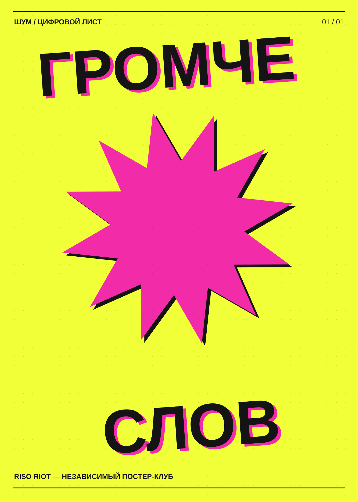
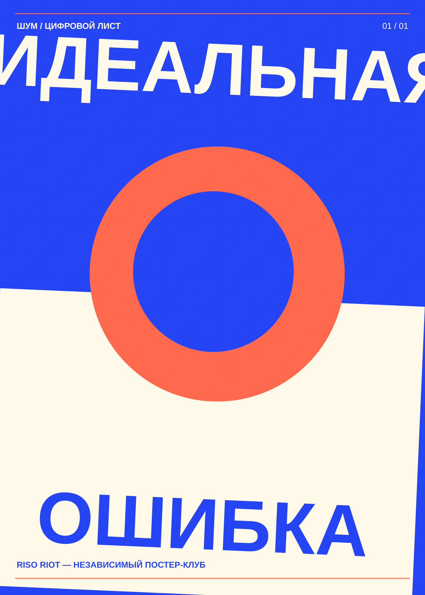
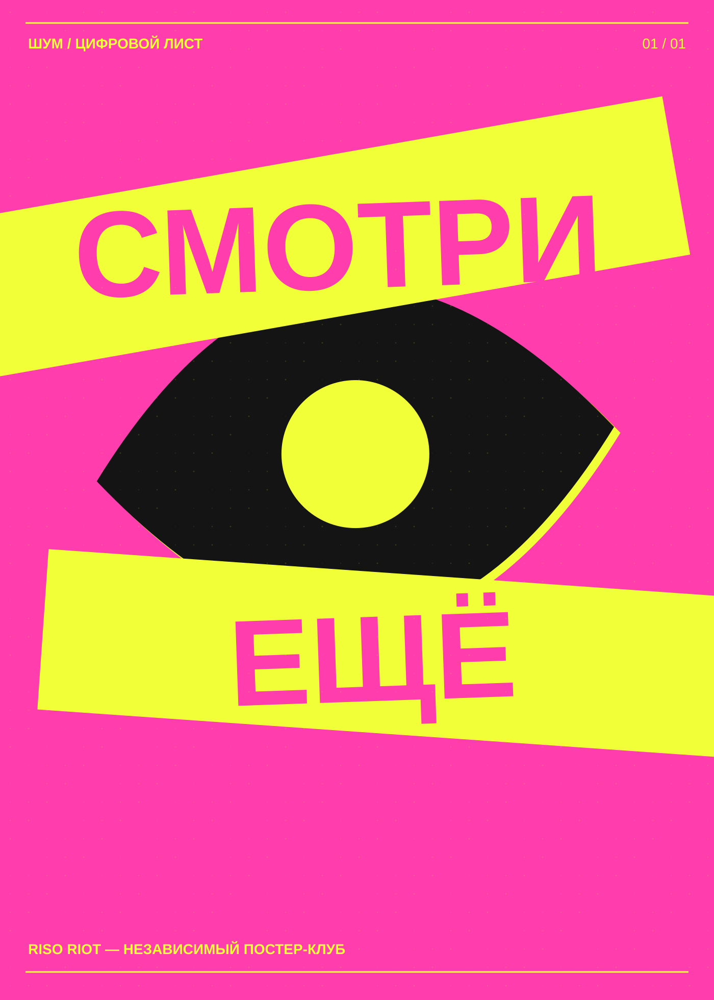
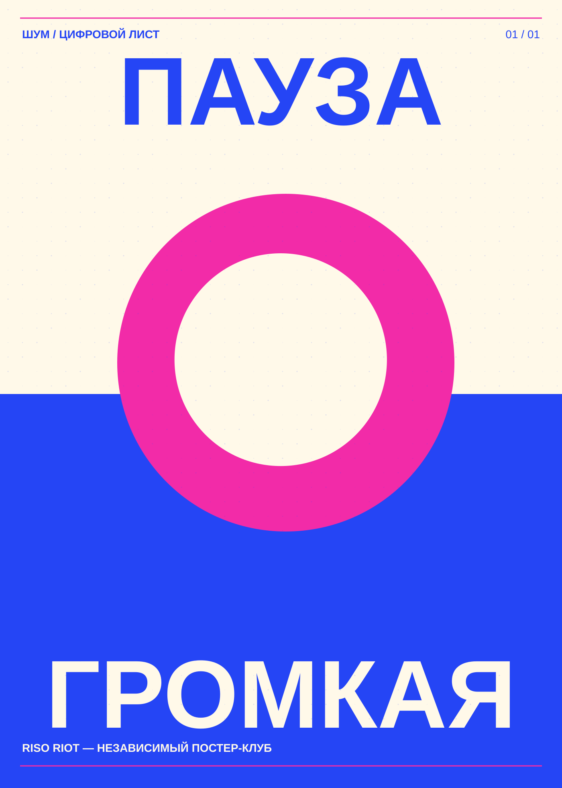
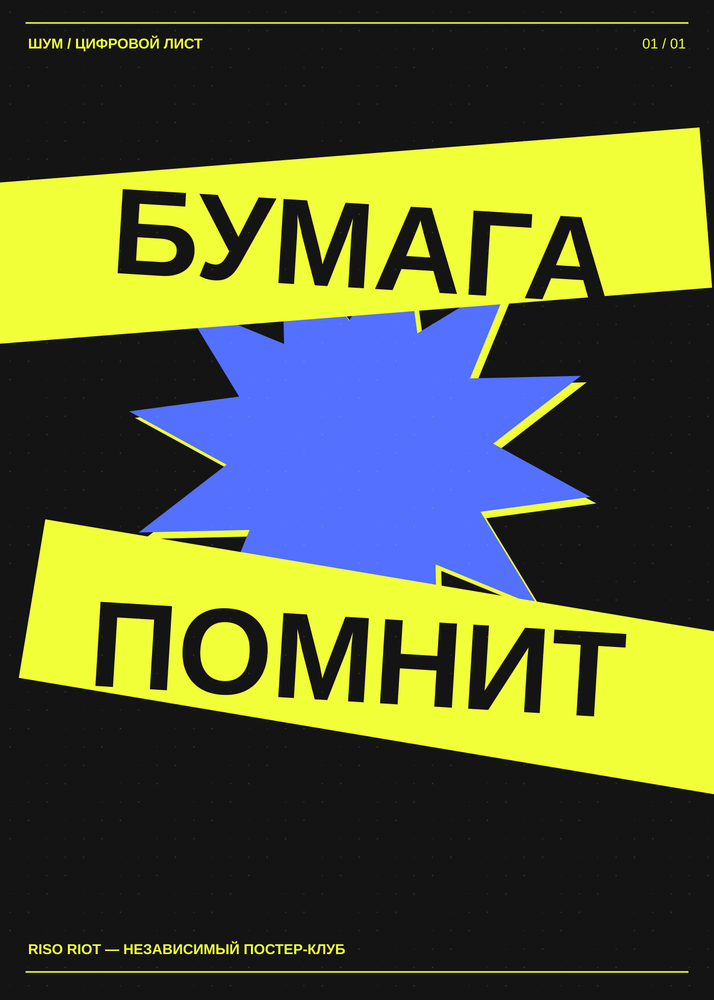
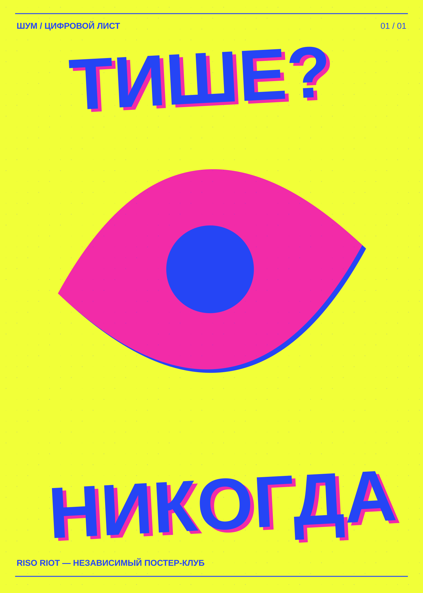
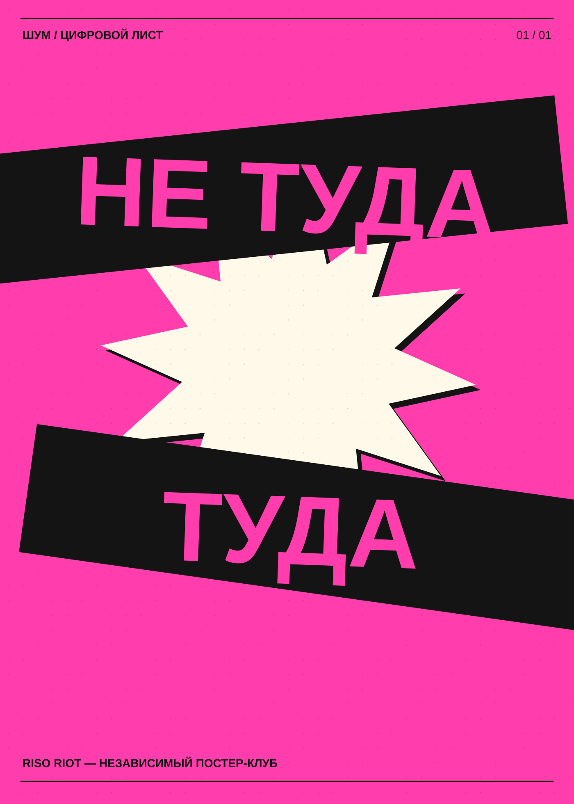

СМОТРИ.
НЕ МОЛЧИ.
Восемь листов. Ни один не просит
разрешения быть заметным.
ЛИСТОВ
8 листов на стене

Идеальная ошибка

Смотри ещё

Пауза громкая

Бумага помнит

Без тихого режима

Не туда — туда

Краска гуляет
Здесь пока тихо.
Попробуй другое слово или открой все листы.
Каждый лист — оригинальная цифровая работа этого концепта. SVG доступен на странице плаката. Сохранённые листы хранятся только в этом браузере.